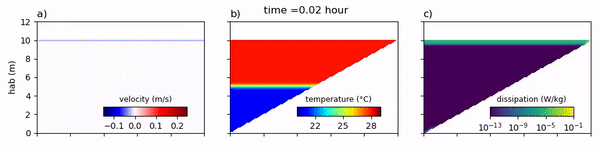

Rafael de Carvalho Bueno
Research Interests
Internal waves in fresh water basin: Internal seiches excited in reservoirs and lakes induced by wind events, degeneration of internal seiches, internal waves of higher vertical modes, interaction between internal wave and lake topography, high-frequency internal waves, wind-resonance phenomenon, internal solitary wave tunneling, new technology to detect internal waves, internal waves induced by lake topography, and internal waves induced by gravity currents.
Physical and biological effecs induced by internal waves: Lake mixing, lake turbulence, water quality, resuspension events of bottom boundary layer due to internal wave activity.

Gravity currents and intrusion: Gravity current evolution in different ambients, interaction between gravity current and sediment, effects of gravity current to water quality and mixing.
Software and sensor development Software and sensors development to monitor the environment, specially aquatic ecossytems. Develpment of low-cost turbidity meters and a new tool capable to provide more information about suspended particles compositions, Gas analyzer to measure methane and carbon dioxide of aquatic ecosystems.